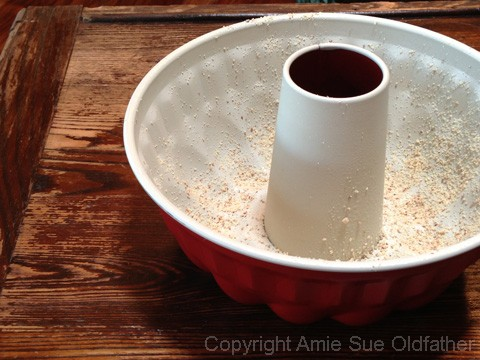
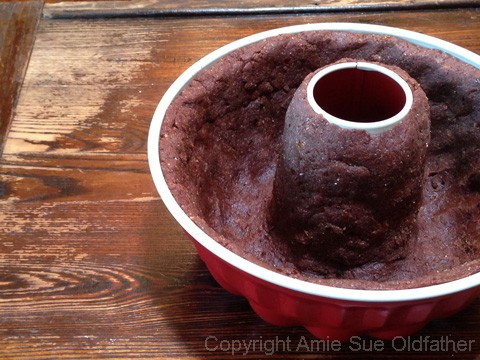
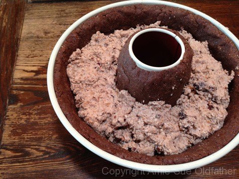
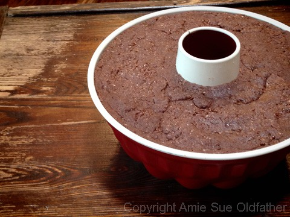
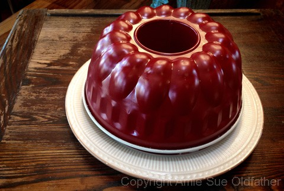
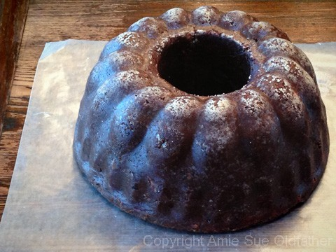
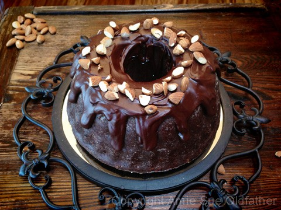
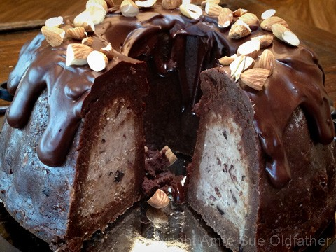

Cherry Chip Bundt Cake

~ raw, vegan, gluten-free ~
With two different cake layers, this recipe has a nice balance of texture and flavor. I have yet to figure out how to obtain that “Betty Crocker” fluffy cake, but regardless, I am very pleased with the outcome of this cake.
It uses quite a bit of ingredient, but for a special occasion, it is well worth it. You can use frozen or fresh cherries. Unfortunately, fresh weren’t in season when I made this, but it still tasted amazing. This summer I will make it again with our fresh cherries to give it that pop of color. If you use frozen, be sure to drain them well after thawing, so the extra liquid doesn’t affect the cake texture.
You will see below in the recipe list that the inner layer uses the almond pulp. You can use ground nuts, but the texture won’t be the same. I hope you enjoy this recipe. Let me know if you try it. Blessings, amie sue
Ingredients:
Outer layer: make 3 batches (2 for walls, 1 for base)
- 1 cup packed Medjool dates, then soaked for 15 mins.
- 2 cups almond flour/meal
- 2 Tbsp raw cacao powder
- 1/4 tsp sea salt
Inner layer:
Preparation:
- Prepare the bundt pan by giving the inside a light coat of coconut oil. Then sprinkle a little almond flour inside and tap out the excess. Set aside.
Outer layer:
- Make a triple batch of the outer batter (less or more, depends on the pan size). Do each batch individually.
- Remove the pits from the dates and inspect the inside of each one, making sure it is free from mold or bugs. Place in a bowl and hot water. Set aside.
- In the food processor, fitted with the “S” blade, combine the almond flour/meal, cacao powder, and salt. Pulse together.
- Drain the soak water from the dates and add the dates to the food processor. Process until the dough starts to stick together, creating a ball as it spins around.
- On a piece of wax paper or the teflex sheet that comes with the dehydrator, dump the batter out and flatten it to about 1/4″ thick. Making it a circle shape, a bit larger than the pan. Carefully lift up and peel the teflex off and lay the batter over the pan, allowing it to drop in against the sides. Gently push it up against the walls of the pan. You can just press chunks of dough into the pan as well, but I find the method explained above works best to get an even thickness.
- Prepare another batch of the batter and use it to finish piecing the dough together, creating an even layer all the way up the sides. If your pan is larger, make another batter and use it until the walls are covered. Clean up the edges. (see photo below)
Inner layer:
- Place 3 cups of the Cherry Chip cake batter in a medium-sized bowl and add the cacao nibs. Mix with your hands.
Assembly:
- Take the Cherry Chip batter and pack the inside of the bundt pan. Push it down in, firmly and evenly. Stopping about 1/4″ from the top.
- Make another batch of the outer layer dough. Flatten it into a 1/4″ thick circle that is the circumference of the pan. Pick it up, removing the teflex sheet that you rolled it out on and place the dough on top. Smooth it out and seal the cake base.
- Chill for a few hours in the fridge.
- To remove the cake, place a large plate over the bundt pan and while holding the plate in place, invert the pan, the cake should drop onto the plate.
- Pour the ganache frosting over the top and allow it to drizzle down the sides. Top with crushed almonds and additional cherries if you have extra.
- This cake should keep for 3-4 days in the fridge. Be sure to keep it in an airtight container to protect if from “fridge-odors.”
Additional Cake Tips:
- How to frost a cake. Click here.
- How to slice a cake. Click here.
- How much frosting is needed for a cake? Click here.



During my photo shoot, my camera rang (iPhone), and I got distracted after hanging up and forgot
to take a picture of the inner batter all smoothed out. :) So pretend you see that.

Time to see if this cake is going to come out… I didn’t want to force the issue, so I flipped it upside down and walked away.
I figured it would get gun-shy on me and not drop if I stood over it. So, I went into the other room and hid around the corner.
I waited and waited and waited… I kept sneaking peaks, then after 10 minutes of toe-tapping,
I heard it… THUMP! The cake dropped onto the plate. :)

Beautiful! Remember way up there in the directions I talked about dusting the pan with ground almond flour before
putting the batter in… well, now you can see the effect it has. I love it, gives it that “cooked” appearance.



© AmieSue.com